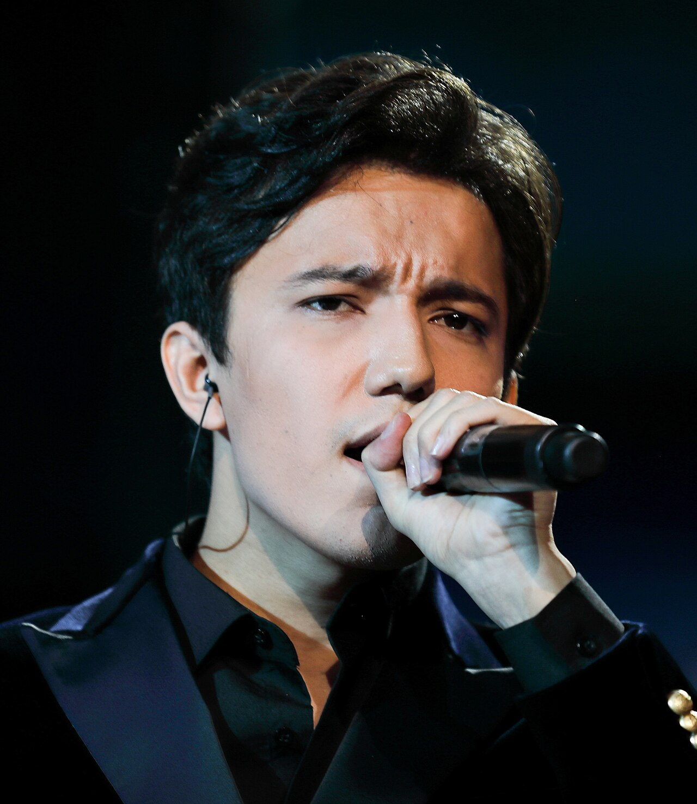

Димаш Кудайберген родился 24 мая 1994 года в городе Актобе, Казахстан. Он стал мировой сенсацией после выступления на китайском шоу "Singer" в 2017 году, поразив зрителей и жюри своим уникальным вокальным диапазоном. Сегодня он — один из самых узнаваемых казахстанских артистов на международной сцене.